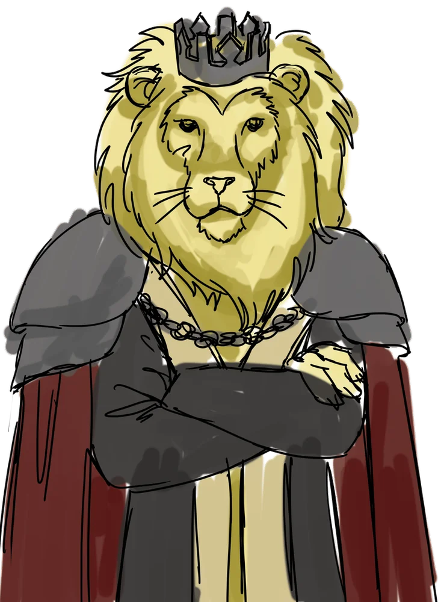
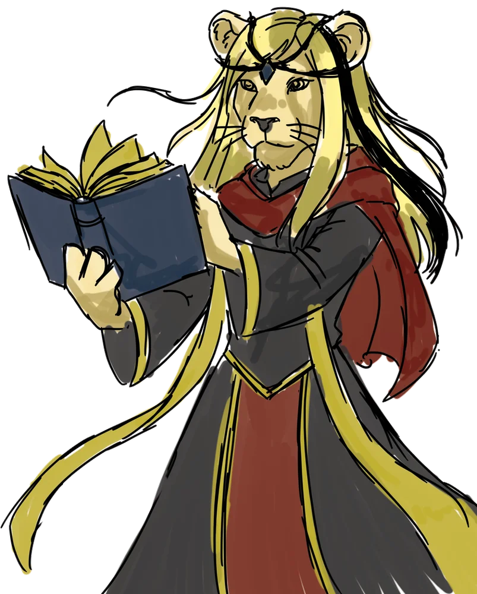

Rhazan Goldmane

- Species
- Lion (Panthera leo)
- Occupation
- King of the Nekoropolis, Champion of the Ring
- Temperament
- Proud, booming, secretly sentimental
- Favourite Food
- Whole roast salmon
“I won this crown with my claws. I keep it with my word.”
Rhazan Goldmane
Ysha Frostfang

- Species
- Siberian tiger (Panthera tigris altaica)
- Occupation
- Queen & War-leader
- Temperament
- Fierce, sharp-witted, impatient
- Favourite Food
- Smoked trout, eaten standing up
“Plans are for the Feathered. I prefer to be ready.”
Ysha Frostfang
Sekhra Sun-Eye

- Species
- Lion (Panthera leo)
- Occupation
- High Seer of the Sun Shrine
- Temperament
- Serene, cryptic, enjoys being right
- Favourite Food
- Warm goat's milk with honey
“The sun sees everything. I merely see it first.”
Sekhra Sun-Eye
Tovra Ironclaw

- Species
- Leopard (Panthera pardus)
- Occupation
- Captain of the Walls
- Temperament
- Stubborn, steady, never sits down
- Favourite Food
- Dried venison strips
“Walls do not need to be clever. They need to be there.”
Tovra Ironclaw
Mika Emberpaw

- Species
- Orange tabby domestic shorthair (Felis catus)
- Occupation
- Recruit, baker's daughter
- Temperament
- Eager, loud, brave beyond her size
- Favourite Food
- Fresh bread (stolen, still warm)
“I am small. So is a spark, and look what sparks do.”
Mika Emberpaw